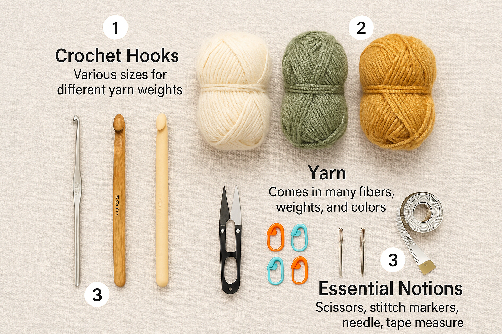
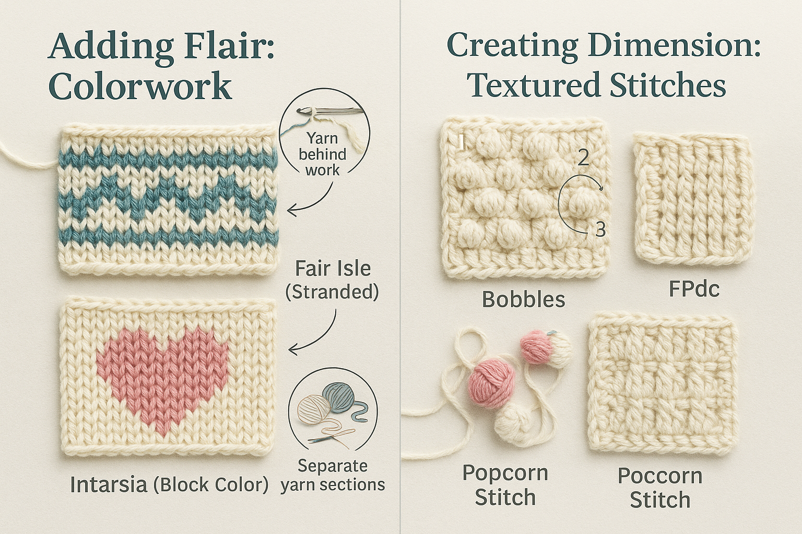
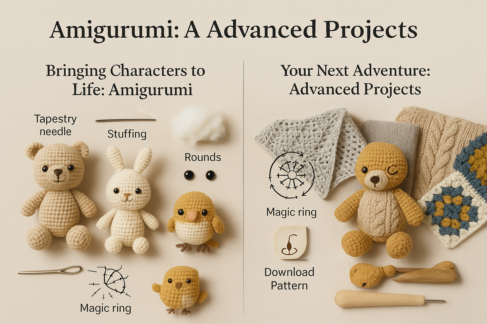
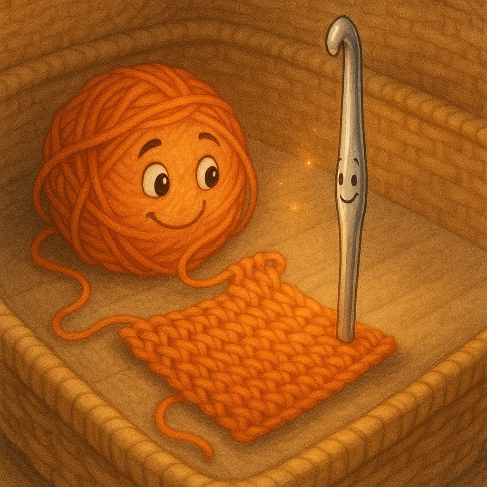

Crochet Mastery: A Complete Guide
by Leola (Sister) Lee
First Edition
Published by Leola's Library
Milwaukee, Wisconsin
Copyright
Copyright © 2025 by Leola (Sister) Lee
All rights reserved. No part of this publication may be reproduced, distributed, or transmitted in any form or by any means, including photocopying, recording, or other electronic or mechanical methods, without the prior written permission of the publisher, except in the case of brief quotations embodied in critical reviews and certain other noncommercial uses permitted by copyright law.
ISBN: 978-1-XXXXX-XXX-X
Library of Congress Control Number: XXXXXXXXXX
Printed in the United States of America
First Printing, 2025
Dedication
To my mother, who first placed a crochet hook in my hands and showed me that patience creates beauty.
To my children, grandchildren, and great-grandchildren, who inspire me to pass down not just techniques, but the joy of creating.
And to everyone who has ever looked at a ball of yarn and seen endless possibilities.
May your hooks always be sharp and your yarn never tangle.
— Sister Lee
Contents
Dedication ............................................. iii
Introduction ......................................... v
Chapter 1: Getting Started .......................... 1
Chapter 2: Basic Stitches ............................ 15
Chapter 3: Reading Patterns ...................... 29
Chapter 4: Colorwork ................................. 43
Chapter 5: Amigurumi ............................... 57
Chapter 6: Finishing Techniques ................ 71
Glossary ................................................ 85
About the Author .................................... 99
Introduction
Welcome to the wonderful world of crochet! Whether you're picking up a hook for the first time or returning to a craft you've loved for years, this guide is designed to walk with you on your creative journey.
I've been crocheting for over sixty years, and in that time, I've learned that this craft is more than just making stitches—it's about patience, problem-solving, and finding joy in the process of creation. It's about connecting with a tradition that spans generations and cultures. It's about making something with your own two hands that can be treasured for years to come.
In this book, we'll start with the basics and build to more complex techniques. We'll explore not just how to make stitches, but how to read patterns, choose materials, troubleshoot common issues, and add your own creative touch to projects.
Remember, every expert was once a beginner. Be patient with yourself as you learn, and don't be afraid to make mistakes—they're often our best teachers.
So pick up your hook, grab your favorite yarn, and let's begin this journey together. I can't wait to see what you create!
With love and encouragement,
Leola (Sister) Lee
Chapter 1: Getting Started

Every great creation begins with the right tools. Let's take some time to understand the essentials you'll need for your crochet journey.
Crochet Hooks
Crochet hooks come in various sizes, materials, and styles. The size of your hook affects the size of your stitches and the overall gauge of your work.
Yarn
The yarn you choose dramatically affects your project's look and feel. Here's what to consider:
Chapter 2: Basic Stitches
Let's begin with the very foundation of crochet: the basic stitches. Master these, and you'll be well on your way to creating beautiful projects.
Holding Your Hook and Yarn
Before we make our first stitch, let's talk about how to hold your tools. There's no "right" way—what matters is comfort and control.
The Chain Stitch (ch)
The chain stitch is the foundation of most crochet projects. It's the simplest stitch and creates a starting chain from which other stitches are built.
Single Crochet (sc)
The single crochet is one of the basic building blocks of crochet. It creates a dense, sturdy fabric perfect for blankets, amigurumi, and winter wear.
Chapter 3: Reading Patterns

Learning to read crochet patterns is like learning a new language—it might seem confusing at first, but with practice, it becomes second nature.
Abbreviations
Crochet patterns use abbreviations to save space. Here are some common ones:
Structure of a Pattern
Most patterns include:
Chapter 4: Colorwork
Ready to play with color? Changing colors adds so much personality to your projects! There are two main ways to incorporate multiple colors in crochet.
Changing Colors
The basic technique for introducing a new color:
Fair Isle (Stranded Colorwork)
This technique involves carrying unused yarn(s) across the back of your work while creating patterns:
Intarsia
This technique is perfect for larger blocks of color:
Chapter 5: Amigurumi
Welcome to the delightful world of Amigurumi – the Japanese art of crocheting small, stuffed creatures! These cute little friends are perfect for gifts and decorations.
What is Amigurumi?
Amigurumi (ah-mee-goo-roo-mee) combines the Japanese words "ami" (crocheted or knitted) and "nuigurumi" (stuffed doll). These small, three-dimensional creations typically have a kawaii (cute) aesthetic with simple features and rounded shapes.
Getting Started
Key Techniques
Amigurumi is incredibly rewarding! Start with simple shapes like balls or basic animals, then work your way up to more complex designs. The possibilities are endless—from cute food items to beloved characters, you can crochet almost anything in this adorable style.
Chapter 6: Finishing Techniques
The difference between a homemade project and a handmade masterpiece often comes down to the finishing. Let's explore techniques that will give your work a professional polish.
Weaving in Ends
Those loose yarn tails need to be secured so they don't unravel or poke out.
Blocking
Blocking shapes your finished piece and evens out the stitches. Different fibers require different blocking methods:
Seaming
Joining pieces together can be done several ways:
Remember, the care you put into these final steps makes all the difference in the appearance and durability of your finished project. Don't rush—give your creation the finishing touches it deserves!
Glossary
A handy reference for common crochet terms and abbreviations:
About the Author
Leola (Sister) Lee was born in the heart of Mississippi and has been a proud resident of Milwaukee since 1985. A mother of six, grandmother of thirteen, and great-grandmother of ten, she carries generations of care in her hands—whether she's crocheting a blanket, painting a portrait, or penning a story from the soul.
A devout woman of faith, Sister Lee has been a pillar of her community for decades. Her artistry isn't confined to the yarn or canvas—it lives in the way she nurtures, uplifts, and teaches others. From local workshops to living rooms filled with grandkids, her gift has always been in guiding others with patience, warmth, and a deep belief that creativity heals.
This instructional guide, "Crochet Mastery: A Complete Guide," transitions Sister Lee from storyteller to teacher—delivering a practical, step-by-step learning journey that makes the art of crochet accessible and joyful for everyone. The book is infused with her signature blend of encouragement and clarity, helping newcomers feel confident and inspired from their very first stitch.
Crochet Mastery: A Complete Guide
In this comprehensive guide, Leola "Sister" Lee shares her six decades of crochet wisdom. From selecting the right materials to mastering intricate techniques, this book guides beginners and experienced crafters alike through the joyful journey of crochet.
With clear instructions, helpful illustrations, and Sister Lee's encouraging voice, you'll learn:
- Essential stitches and techniques
- How to read and understand patterns
- Colorwork and advanced methods
- Tips for creating beautiful, lasting projects
"Sister Lee's instructions are clear, her encouragement genuine, and her love for the craft contagious. This book is a treasure for anyone who wants to create with yarn and hook."
— Milwaukee Fiber Arts Magazine